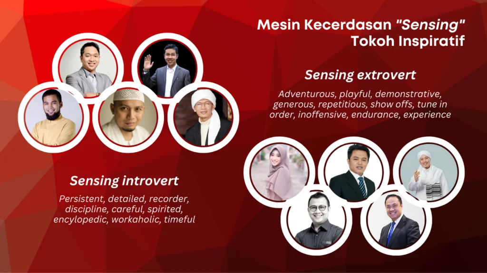

“Si & Se: Si Pengingat Kuat dengan Otot yang Tangguh”
Tipe Sensing adalah mereka yang mengandalkan pancaindra sebagai sistem operasi utama otaknya. Mereka memiliki daya ingat luar biasa (Memory Quotient), ulet, detail, dan sangat terstruktur. Dalam konsep STIFIn, tipe S terbagi menjadi dua kepribadian: Sensing introvert (Si) dan Sensing extrovert (Se).
Memory Quotient - Kemampuan mengingat detail, fakta, dan prosedur.
Memiliki otot merah (aerobik) yang membuatnya ulet, rajin, dan tahan banting.
Bekerja berdasarkan fakta, kronologis, dan sangat memperhatikan detail.

Para tokoh dengan Mesin Kecerdasan Sensing yang menginspirasi dunia dengan ketekunan, kedisiplinan, dan ingatan kuat mereka.
Ki Hajar Dewantara - Pahlawan Pendidikan Indonesia. Dengan ketekunan dan kedisiplinannya, ia membangun fondasi pendidikan untuk bangsa.
B.J. Habibie - Ilmuwan dan Presiden RI ke-3. Detail, workaholic, dan memiliki ingatan luar biasa dalam teknologi pesawat terbang.
Rhoma Irama - Raja Dangdut. Karismatik di panggung, demonstrative, dan memiliki endurance luar biasa dalam berkarya selama puluhan tahun.
Didi Kempot - Maestro Campursari. Pengalaman hidupnya dituangkan dalam ribuan lagu yang menyentuh hati.
Mereka membuktikan bahwa kekuatan Sensing (ingatan, ketekunan, dan pengalaman) dapat mengubah dunia.
Sensing adalah Mesin Kecerdasan berbasis pancaindra. Mereka belajar dan memproses dunia melalui apa yang mereka lihat, dengar, raba, kecap, dan cium. Ingatan mereka sangat kuat, seperti kamera atau perekam yang menyimpan jutaan data. Mereka adalah sosok pekerja keras, disiplin, dan dapat diandalkan untuk tugas-tugas yang memerlukan ketelitian dan konsistensi.
Lokasi: Belahan otak bagian bawah kiri
Kepadatan: Lapisan Putih (Si) / Lapisan Abu-abu (Se)
Cara Kerja: Dari Dalam ke Luar (Si) / Dari Luar ke Dalam (Se)
Menurut konsep STIFIn, berikut adalah 10 sifat tetap yang melekat pada kepribadian Sensing (berlaku untuk Si dan Se, dengan porsi berbeda).
*Cenderung cuek pada hal di luar fokusnya
Contoh profesi lainnya: Atlet, Tentara, Dokter, Sejarawan, Pertanahan, Manufacturing, Pramugari, Model, Perkebunan, Peternakan, Administrasi, Sekretaris, Operator, Pekerja Pabrik, Keamanan, Pelukis naturalis, Fotografer, Cameraman, Presenter, dan banyak pekerjaan lapangan lainnya.
Sistem operasi: Dari dalam ke luar. Baterai ada di dalam, sehingga tipe ini seperti memiliki tenaga yang kuat dan stabil. Mereka percaya diri, ambisius, dan sangat terorganisir.
Calon orang kaya berkat keuletan. Targetnya adalah memperbesar skala volume kinerja. Cocok menjadi player di bisnis atau profesi yang membutuhkan ketekunan.
Merekam perbendaharaan kata, mengulang dengan variasi, menggunakan alat peraga, dan yang terpenting: belajar sambil bergerak dan memiliki sparring (teman latih/pesaing) untuk memotivasi.
Sistem operasi: Dari luar ke dalam. Baterai bergantung pada lingkungan. Mereka butuh pemicu dari luar untuk bergerak, tetapi setelah bergerak, determinasinya sangat kuat. Fisik cenderung mungil tapi lincah (motorik halus).
Jeli menangkap peluang. Targetnya adalah mencari ladang untuk menghasilkan pendapatan. Cocok menjadi frontliner atau penggerak proyek.
Menghafal dengan menandai bacaan, merekam peristiwa secara visual, mengulang latihan soal, dan mengalami langsung. Mereka sangat termotivasi oleh insentif nyata (tangible) yang terukur.
Konsultasikan hasil tes STIFIn-mu dengan promotor berpengalaman. Kami siap membantu kamu memahami potensi genetikmu untuk karir, pendidikan, dan hubungan.
Chat Promotor (Zulfikar Abdu)Atau hubungi: 0857-7217-5078